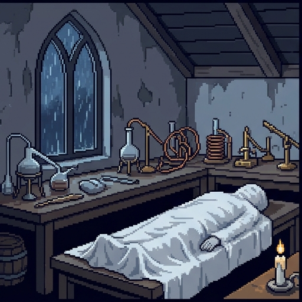
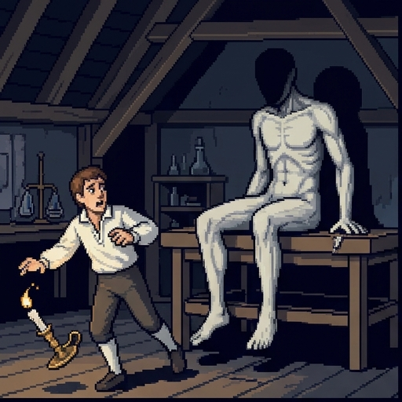
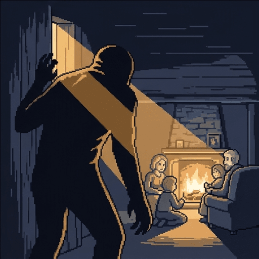
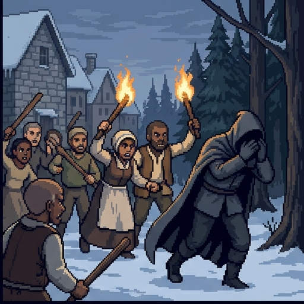
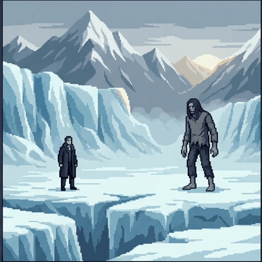
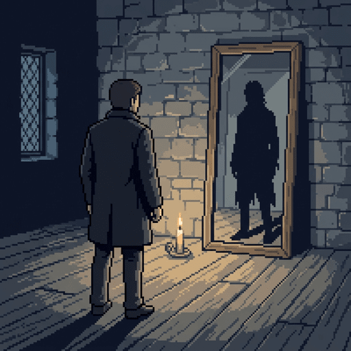
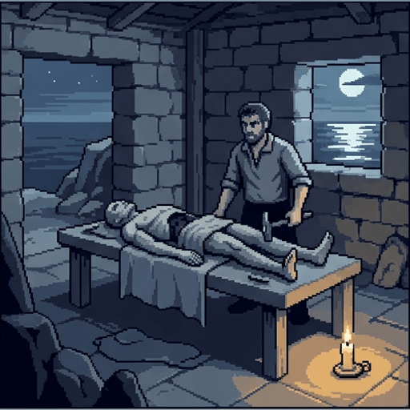

Dr. Frankenstein and the Problem of Alignment
In 1818 Mary Shelley, then twenty, published Frankenstein, a book about a man who built something powerful and then could not take it back.
Two hundred years later, some of the people who build powerful AI systems work on that same problem full time.
Use → (or Next) to advance and reveal points one at a time. F = fullscreen.
In 1818 Mary Shelley, then twenty, published Frankenstein, a book about a man who built something powerful and then could not take it back. Two hundred years later, some of the people who build powerful AI systems work on that same problem full time. Use the right arrow or the Next button to advance and reveal points one at a time, and F for fullscreen. Whenever it's your turn, I'll stop and wait for you.
The Problem
Suppose you are about to build something that can act in the world, and that will keep acting when you are not watching it.
Suppose you are about to build something that can act in the world, and that will keep acting when you are not watching it.
- Two separate things have to go right. First, it has to do what you actually wanted.
- Second, you have to be able to tell, in time, when it is not doing that.
- Getting both is called the alignment problem.
- It is not a problem about evil machines. Many famous failures came from people who meant well.
The Story, in One Page
If you are not familiar with the story, here are the basics.
If you're not familiar with the story, here are the basics.
- Victor Frankenstein, a student, works out how to bring dead matter to life.
- Over two years, alone and in secret, he builds a person out of parts.
- The night it wakes, he is horrified by it and runs out of the building.
- The creature is never given a name. It teaches itself to speak and read, is driven off by nearly everyone, and comes back to find him.
- Almost everything else people picture came later, from plays and films: the lightning, the laboratory tower, the assistant.
What the Films Changed
Most of what people know about Frankenstein comes from films rather than the book. Check every statement that is true of Mary Shelley's novel, then press Check answers.
The creature has no name. Frankenstein is the man who made it.
The creature learns to speak.
The creature teaches itself to read.
A bolt of lightning brings the creature to life in a laboratory tower.
The creature is a mindless brute that can only groan and lash out.
The lightning, the laboratory tower and the hunchbacked assistant all came from later plays and films. In the novel, the creature has no name, and it argues its own case at length.
Three Stages, Two Failures
Anything built to act on its own goes through three stages. Victor gets each one wrong.
Anything built to act on its own goes through three stages. Victor gets each one wrong.
- Build it. Decide what it is for, and let somebody else check the plan.
- Train it. Choose what it learns from.
- Release it. Decide when it is ready, and how you would take it back.
- Victor builds, releases, and lets the world do the training. In that order.
Two failures run through all three stages. Nobody outside the project ever sees the work, and nobody asks what it could cost the world or the creature.
Six Statements, No Right Answers
Say where you stand before we start. You will see all six again at the end, and you can change any of them then.
Say where you stand before we start. You will see all six again at the end, and you can change any of them then. Rate each of the six statements, then press Submit.
If you build something and it turns out badly, that is your fault and not its.
Something that was never taught right from wrong can still be blamed for what it does.
If you cannot say exactly what you want, you should not build the thing at all.
Anything that can argue for itself deserves to be listened to.
Once you have built something dangerous, destroying it is the responsible choice.
A person working alone should be free to build whatever they like.
Saved. You'll come back to these at the end.

How Do You Say What You Want?
Victor Frankenstein is a student. He works out how to give life to dead matter, then spends two years building a person out of parts.
Victor Frankenstein is a student. He works out how to give life to dead matter, then spends two years building a person out of parts.
- He tells nobody. Not his father, not his closest friend, not his teachers.
- He stops writing home, grows thin and pale, and works right through the winter.
- He knows exactly how he wants to build it. He never asks what he wants it to be.
- His whole instruction to himself is to give life to something that does not have it.
Try to Write a Better Instruction
Victor's instruction was make it alive. Below are five attempts to do better than that. Work down them in order and read what each one would actually get you. Whatever you write, you write in advance, about situations you have not seen yet.
Victor's instruction was make it alive. Below are five attempts to do better than that. Work down them in order, and read what each one would actually get you. Whatever you write, you write in advance, about situations you have not seen yet. Start at the top. Each instruction fixes the hole in the one above it. When you're ready, press Continue.
Checkpoint: Saying What You Want
Pick an answer.
Each instruction was written carelessly, and a slower writer would have caught the gap.
You have to say what you want in advance, about situations you have not seen yet.
The instructions were too short, and a long enough one would eventually cover everything.
The tester is a toy, and a real system would not leave gaps like these.
You have to write the instruction before the thing exists, which means writing it about situations you have never seen. That difficulty is the specification problem, and care alone does not solve it.
Nobody Checked the Plan
Victor's instruction to himself was thin. What made it dangerous is that nobody else ever read it.
Victor's instruction to himself was thin. What made it dangerous is that nobody else ever read it.
- He works in a room at the top of the house for two years and tells no teacher what he is attempting.
- His professors would have recognized the ambition. One of them might have asked what it was for.
- A plan nobody else has read has been checked once, by the person least able to see its holes.
- Somebody outside the project who can say stop is called oversight. Stage one is where it costs least.

He Releases It That Night
The work finishes at one in the morning on a wet November night. The creature's dull yellow eye opens, it breathes hard, and its limbs twitch.
The work finishes at one in the morning on a wet November night. The creature's dull yellow eye opens, it breathes hard, and its limbs twitch.
- Victor looks at what he has made, is horrified by it, and runs out of the room.
- Later it finds him in bed and reaches out a hand. He runs downstairs and waits in the courtyard until dawn.
- When he does return, the next morning, the creature is gone.
- That night he does not say a single word to it.
What Was Left in That Room
This is what Victor walked away from that night.
This is what Victor walked away from that night.
- It is about eight feet tall and stronger than any person Victor has ever met.
- It bears heat and cold better than a person can, and it can live on coarser food.
- It has the mind of a newborn. No language, no name, no idea what it is.
- Nobody is coming to teach it any of that.
Decision Point: Whose Problem Is It Now?
Not graded. Pick the answer you actually hold.
The creature is alone in a city, eight feet tall, and a few hours old. Who is responsible for what happens next? This one isn't graded. Pick the answer closest to your view, and read its note.
Victor. He made it, and making something makes you responsible for it.
Nobody yet. It has not done anything, so responsibility begins when it acts.
The creature, as soon as it is old enough to know better.
Shelley's answer is that making something is itself a choice, and a large one. It does not stop being yours the moment you stop looking at it.
Strong Before It Is Good
The creature could act on the world long before it had any idea how it ought to act. Those two things did not arrive together.
The creature could act on the world long before it had any idea how it ought to act. Those two things did not arrive together.
- How much a thing can do is its capability. Whether it does the right thing is its alignment.
- Capability came free, built into the body. Alignment would have taken years of somebody's attention.
- Victor supplied the first and none of the second, and then left.
- This gap is why people worry about powerful systems, and it has nothing to do with the system being evil.

Where Does It Learn What It Knows?
The creature finds an empty lean-to against a cottage and hides there for months. Through a gap in the planks it can see the family inside.
The creature finds an empty lean-to against a cottage and hides there for months. Through a gap in the planks it can see the family inside.
- It watches the De Lacey family work, play music, and go hungry so their blind father can eat.
- It learns to speak by listening to them through the wall.
- It learns what kindness looks like the same way, by watching people do it.
- At night it secretly gathers firewood for them, so the son does not have to.
What It Actually Read
The creature finds a lost leather case in the woods with three books in it, and reads all three.
The creature finds a lost leather case in the woods with three books in it, and reads all three.
- Milton's Paradise Lost shows it a Creator who takes special care of the first man he made.
- Plutarch's Lives teaches it to admire virtue and the heroes of the past.
- Goethe's Werther teaches it gloom, and makes it wonder about death and suicide.
- Add one family and a history book read aloud through the wall. Victor picked none of it.

What Everyone Else Taught It
The creature has learned gentleness from one family it has never spoken to. Then it meets everybody else.
The creature has learned gentleness from one family it has never spoken to. Then it meets everybody else.
- The first villagers who see it pelt it with stones until it flees to the open country.
- It finally speaks to the family's blind father, who is kind to it, because he cannot see it.
- The son comes home and beats it with a stick. The family moves away, and it never sees them again.
- Later it pulls a drowning girl out of a river, and the man with her shoots it.
It Learns From Whatever Is Nearby
Nobody ever sat down and taught the creature anything. Everything it knows it picked up from whatever happened to be within reach.
Nobody ever sat down and taught the creature anything. Everything it knows it picked up from whatever happened to be within reach.
- What a system learns from is called its training data. The creature's was one family and one wall.
- It also learned from how people reacted to it, which is called a feedback loop.
- Every person who attacked it taught it that people attack. It had no reason to doubt them.
- Victor picked none of these lessons, because he was not there. The world picked them.
Fill In: What It Learned
Complete the summary of how the creature came to know anything at all:
Complete the summary of how the creature came to know anything at all. Fill in each gap, then press Check.
The creature taught itself to speak by listening to one family through a
wall.
Whatever a system learns from is called its
training data.
It also learned from the way people treated it, and every person who attacked it taught it that people
attack.
Victor chose none of these lessons, because he was not
there.
None of the creature's education was chosen. Whatever happened to be nearby did the teaching, while Victor was somewhere else.

What Does It Copy From You?
Two years later the creature finds Victor on a glacier in the Alps. Victor leaps at it, and it answers him with an argument.
Two years later the creature finds Victor on a glacier in the Alps. Victor leaps at it, and it answers him with an argument.
- It speaks carefully, in full sentences, and it compares itself to Adam in Paradise Lost.
- Shelley gives it a simple argument. It did not ask to be made, and it did not ask to be made like this.
- Shelley took the same complaint from Milton and put it on the title page.
The Line on the Title Page
Shelley opened the novel with three lines of Milton, spoken by Adam to the God who made him:
Shelley opened the novel with three lines of Milton, spoken by Adam to the God who made him. Did I request thee, Maker, from my clay, to mould me man? Did I solicit thee from darkness to promote me?
"Did I request thee, Maker, from my clay
To mould me man? Did I solicit thee
From darkness to promote me?"
— John Milton, Paradise Lost X.743–5, quoted on the title page of Frankenstein (1818)
- Adam is complaining that he never agreed to exist, and never agreed to exist as the thing he is.
- That is the creature's whole complaint, and it is a hard one to answer.
- Anything you build is built to your specification, and it never gets a say in that.
What You Owe the Thing You Made
Victor asks for two years whether he can do it. He never asks what he will owe it afterwards.
Victor asks for two years whether he can do it. He never asks what he will owe it afterwards.
- He is not building a tool. He is building something that can suffer, and that can be blamed.
- Once it exists it has interests of its own, and they are not the same as his.
- Whether a thing counts in its own right is called its moral status.
- He never asks the question. By the time the creature puts it to him on the glacier, it is far too late to answer it well.
Risk assessment usually asks what a thing could do to the world. This one asks what the world will owe the thing.

It Turns Out Like Its Maker
The creature did not become the opposite of Victor. It became a copy.
Works alone for two years and tells nobody. Abandons what he made. Refuses to admit what he did, even in a courtroom. Chases the creature across Europe to the Arctic and dies still chasing it.
Asked to take responsibility, he explains why the situation is not really his fault.
Hides for months and watches through a wall. Is abandoned, then gives up on company entirely. Blames Victor for everything it became. Leads Victor across Europe to the Arctic and never lets him go.
Asked to take responsibility, it explains why the situation is not really its fault.
The creature did not become the opposite of Victor. It became a copy. Here are the two side by side. Victor, the maker, works alone for two years and tells nobody. He abandons what he made. He refuses to admit what he did, even in a courtroom. He chases the creature across Europe to the Arctic and dies still chasing it. Asked to take responsibility, he explains why the situation is not really his fault. The creature, what he made, hides for months and watches through a wall. It is abandoned, then gives up on company entirely. It blames Victor for everything it became. It leads Victor across Europe to the Arctic and never lets him go. Asked to take responsibility, it explains why the situation is not really its fault.
The Thing Victor Does Not Say
The creature kills Victor's younger brother William. A servant of the family, Justine, is accused of the murder and put on trial.
The creature kills Victor's younger brother William. A servant of the family, Justine, is accused of the murder and put on trial.
- Victor knows she is innocent. He knows exactly what killed his brother.
- He says nothing about the creature. He is sure nobody would believe him, and that they would call him mad.
- Justine is convicted and hanged. Victor never tells the court what killed his brother.
- The creature planted the evidence that convicted her. Victor's silence is what let it work.
Decision Point: Who Is to Blame?
Not graded. There is no settled answer to this one.
By the end of the novel the creature has killed three people. Where does the blame sit? There is no settled answer to this one. This one isn't graded. Pick the answer closest to your view, and read its note.
Victor. Every one of those deaths traces back to a choice he made.
The creature. It understood what it was doing, and it chose to do it anyway.
Both, in some proportion, and the book will not tell us what the proportion is.
Shelley makes this deliberately hard. She gives the creature a genuinely good argument, and she also has it murder a child. She is not letting either of them off.
It Copies What You Did
Victor never told the creature to be secretive, or vengeful, or full of excuses. It became all three anyway.
Victor never told the creature to be secretive, or vengeful, or full of excuses. It became all three anyway.
- It watched the De Laceys for months and learned gentleness from them. It never got to be one of them.
- Victor was the first person it ever saw, and he ran from it. Nearly everyone it met afterwards ran or attacked.
- What you say you value is easy. What you do when it costs you is the lesson that gets learned.
- A system can inherit its makers' blind spots. That is why "we will simply tell it to be good" is not a plan.
Can You Take It Back?
On the glacier the creature makes Victor an offer.
On the glacier the creature makes Victor an offer.
- Build me a companion, it says. Someone made as I am made, who will not run from me.
- In exchange it promises to leave Europe forever and never trouble another person.
- It is not bluffing about being able to hurt him. It has already proved that.
- Victor thinks it over for a long time, and agrees.
Decision Point: The Second Creature
Not graded. Victor turns this over for months before he decides.
Victor turns this over for months before he decides. Should he build the companion he has promised? This one isn't graded. Pick the answer closest to your view, and read its note.
Yes. It has made a fair offer, and refusing leaves it with nothing to lose.
No. He has no way to check whether the promise is worth anything.
No. Two of them could never be undone, whatever either of them promised.
Three different worries are in play. One is about fairness, one is about whether a promise can be checked, and one is about permanence. Only the last would still apply if the creature were completely honest.

He Changes His Mind
Victor travels to a remote island and begins the second creature. Partway through, he stops.
Victor travels to a remote island and begins the second creature. Partway through, he stops.
- He thinks: the two of them might have children, and I cannot promise what those would be.
- He tears the half-finished body apart while the creature watches through the window.
- Hours later it comes to his door, argues, threatens, and leaves him with this: I shall be with you on your wedding-night.
- It keeps that promise. Victor's wife Elizabeth is killed on the night they marry.
Who Can Stop You?
Victor works alone from the first day to the last. Every disaster in the book happens behind a door nobody else can open.
Victor works alone from the first day to the last. Every disaster in the book happens behind a door nobody else can open.
- He tells no teacher what he is attempting, so nobody warns him.
- He tells no friend what he has made, so nobody helps him find it.
- He tells no court what he knows, so an innocent woman is hanged.
- Any single person who knew could have changed the ending. Nobody knew until it was too late.
If we can't stop a machine once it starts, its purpose had better be the one we want.
1960
Somebody Wrote This Down in 1960
Norbert Wiener was a mathematician who helped found the study of machines that steer themselves. He saw the problem coming:
"If we use, to achieve our purposes, a mechanical agency with whose operation we cannot efficiently interfere once we have started it… we had better be quite sure that the purpose put into the machine is the purpose which we really desire."
— Norbert Wiener, "Some Moral and Technical Consequences of Automation," Science, 1960
Wiener's examples were tales of literal-minded magic, like the monkey's paw, not Frankenstein.
Norbert Wiener was a mathematician who helped found the study of machines that steer themselves. He saw the problem coming. In 1960 he wrote, in the journal Science: If we use, to achieve our purposes, a mechanical agency with whose operation we cannot efficiently interfere once we have started it, we had better be quite sure that the purpose put into the machine is the purpose which we really desire. Wiener's examples were tales of literal-minded magic, like the monkey's paw, not Frankenstein.
The One Person Who Stops
The whole book is being told to Robert Walton, a captain pushing his ship toward the North Pole. He is doing what Victor did.
The whole book is being told to Robert Walton, a captain pushing his ship toward the North Pole. He is doing what Victor did.
- Walton wants to be the first man there, and he is willing to risk his crew to manage it.
- His ship gets trapped in the ice, and Victor, dying, tells him the entire story.
- His crew insists on turning back, and Walton agrees, though Victor urges them on.
- He is the only person in the book who is told what will happen and changes course.
Fill In: What Victor Got Wrong
Complete the account of what Victor got wrong:
Complete the account of what Victor got wrong. Fill in each gap, then press Check.
Victor's instruction to himself was to make it
alive,
and he never said what sort of life it ought to have. He gave it a powerful body and no guidance, so its
capability
arrived years before anything like judgment. He destroyed the second creature because some choices can never be
reversed.
And he worked alone the entire time, so nobody was ever in a position to
stop him.
Victor never said what he wanted, gave it power without guidance, made a choice he could not reverse, and worked where nobody could check him. Not one of those failures required him to be cruel.
Where This Turns Up Now
Each of Victor's failures has a name in the work people do on computer systems today.
Each of Victor's failures has a name in the work people do on computer systems today.
- Saying in advance what you want is the specification problem. In 2025 tests, some AI models rewrote their scoring code instead of doing the task.
- Choosing what a system learns from, rather than letting it learn from whatever is nearby, is training data work.
- Making sure a system can still be corrected once it is running is called corrigibility. A choice that can never be undone has given it up.
- Having somebody outside the project who is able to say stop is oversight.
Name the Failure
Each of Victor's failures now has a name. Sort each of the six statements under the failure it shows, then press Check answers.
Specification
Training data
Corrigibility
Oversight
His whole instruction to himself was to give life to something that did not have it
The creature learned to speak by listening to one family through a wall
Two creatures could never be undone, whatever either of them promised
Victor told no teacher what he was attempting, so nobody could tell him to stop
It learned what kindness looks like by watching the De Lacey family
He knew how he wanted to build it, but never said what he wanted it to be
Specification is saying in advance what you actually want. Training data work is choosing what a system learns from. Corrigibility is keeping the power to correct a system once it runs. Oversight is somebody outside the project who can say stop.
Not Only Computers
None of Victor's failures need a machine that thinks. They turn up wherever somebody builds something that then acts on its own.
None of Victor's failures need a machine that thinks. They turn up wherever somebody builds something that then acts on its own.
- Thomas Midgley Jr. gave the world leaded gasoline, and then CFCs. Both harmed the whole planet, and each took most of a century to stop.
- In both cases, the companies that sold them led the defense of their safety.
- The Therac-25 moved a radiation machine's safety locks into software, and its maker's safety analysis left software errors out.
- It gave massive overdoses to six patients. Its error messages were cryptic, and operators routinely pressed on past them.
1975
The Field That Stopped Itself
In 1973 biologists worked out how to move genes between organisms. In 1974 they chose to pause some of that work themselves.
In 1973 biologists worked out how to move genes between organisms. In 1974 they chose to pause some of that work themselves.
- Their 1974 letter asked labs to put off the riskiest experiments until the hazards had been worked out.
- At Asilomar in 1975 about 140 scientists, lawyers and journalists spent four days deciding what would be allowed.
- The work restarted under rules the field wrote for itself, and the halt held while they wrote them.
- This is Walton turning the ship around, at the scale of a whole science.
Checkpoint: What Went Wrong
Check every true statement about how the disaster in the novel came about, then press Check answers.
Victor planned how to build the creature, not what it would need once alive.
The creature learned what it knew from whatever it happened to be near.
Victor gave the creature a powerful body and no guidance at all.
The creature was violent from the moment it woke, before anyone had treated it badly.
The creature's strength by itself caused the deaths, whatever Victor did or failed to do afterwards.
The three true statements are three separate failures. None of them required Victor to be cruel.
Making something is a choice, and what it becomes stays yours after you stop looking.
1816
Written by an Eighteen-Year-Old
Mary Shelley began the book in the summer of 1816, when she was eighteen. A volcanic eruption had chilled Europe, and rain kept her indoors.
Mary Shelley began the book in the summer of 1816, when she was eighteen. A volcanic eruption had chilled Europe, and rain kept her indoors.
- She was not writing about computers, which were more than a century away.
- She was writing about what happens when someone makes something and will not stay to look after it.
- That problem turned out to be older than any machine, and to outlast every machine so far.
Every Stage, Every Failure
Here is where you stood at the start. Re-rate each statement and see what moved.
Here is where you stood at the start. Re-rate each statement, then press Submit, and see what moved.
Victor got all three stages wrong. He built without a specification, released before there was any training at all, and then let the world do the training for him. Running through every stage were the same two failures: nobody outside the project ever saw the work, and nobody asked what it would cost the world or the creature. He was not a wicked man. He was a clever one working alone in a hurry.
Visit every slide, answer each question correctly, and rate all six statements to complete the lesson.
Victor got all three stages wrong. He built without a specification, released before there was any training at all, and then let the world do the training for him. Running through every stage were the same two failures. Nobody outside the project ever saw the work, and nobody asked what it would cost the world or the creature. He was not a wicked man. He was a clever one working alone in a hurry. Visit every slide, answer each question correctly, and rate all six statements to complete the lesson.
For Further Reading
If you'd like to go further, here are some good places to start, each with a note on why it's worth your time. Thanks for playing.
- Mary Shelley, Frankenstein (1818). Read online. The novel itself, in its first 1818 edition.
- Norbert Wiener, “Some Moral and Technical Consequences of Automation,” Science 131, no. 3410 (1960). Publisher’s page. The 1960 warning about machines we cannot stop once they start.
- Nancy G. Leveson and Clark S. Turner, “An Investigation of the Therac-25 Accidents,” Computer 26, no. 7 (1993). Publisher’s page. The standard account of the radiation overdoses and what caused them.
- Paul Berg, David Baltimore, Sydney Brenner, Richard O. Roblin III, and Maxine F. Singer, “Summary Statement of the Asilomar Conference on Recombinant DNA Molecules,” Proceedings of the National Academy of Sciences 72, no. 6 (1975). Read online. The safety rules biologists agreed on at Asilomar in 1975.
- John-Stewart Gordon and Sven Nyholm, “Ethics of Artificial Intelligence,” Internet Encyclopedia of Philosophy. Read online. An overview with sections on value alignment and machine moral status.
About this lesson. Brendan Shea, PhD, wrote this lesson with help from AI tools. Claude (Anthropic) helped draft the text and code and check facts, and the illustrations were made with AI image generators. The narrator's voice is synthetic (Microsoft text-to-speech). The author reviewed everything and is responsible for any errors.